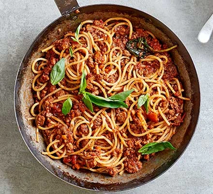

Spaghetti Bolognese

Description:
This dish is perfect for those cold winter nights when you need something
hearty to warm you.
The ingredients are versitile and you can pretty much
substitute any of the following ingredients for whatever you have in your
pantry.
Ingredients:
- Spaghetti
- Canned Tomatoes
- Onions
- Carrots
- Celery
- Minced Meat
- Beef Stock
- Parmesean
- Parsley
Steps:
-
Dice up the onions, carrots and celery into small pieces. Heat up a large
pot to low - medium heat and put the diced onions in. Sweat out the onions
unitl they are translucent and then add the diced carrots and celery in.
Continue to cook these 3 ingredients on low to medium heat for at least
20 minutes, though the longer the better to caramelise the vegetables.
-
Once the vegetables have been caramelised to your liking, remove them
from the pan and put in all of your minced meat. Cook it until the meat
is completely browned.
-
Put some minced garlic and tomato paste into the meat mixture and let
the flavour's incorporate. Afterwards, add the caramelised mixture back
in and incorporate the flavours further. Add in a can of tomatoes and
the beef stock and let simmer for as long as you can (minimum 30 minutes).
-
After the pieces of tomato have disintigrated in size and the sauce has
reduced and thickened, season the mixtue to taste and combine with cooked
spaghetti to complete the dish.